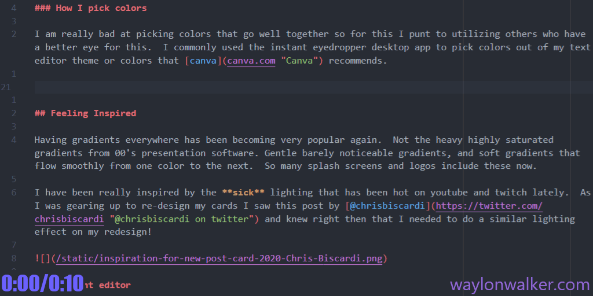
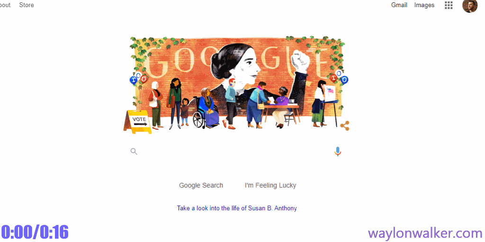
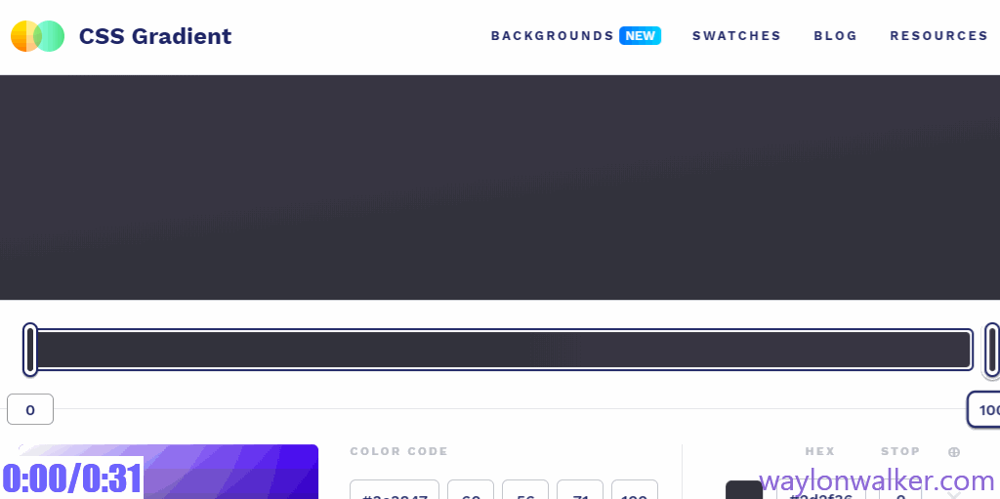
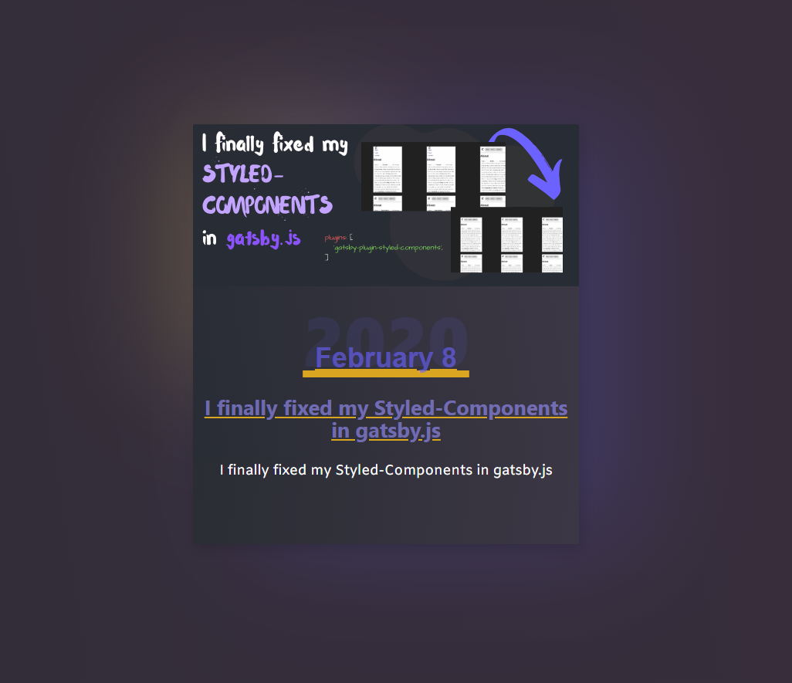

2020 waylonwalker.com rebrand
2020-02-17T13:02:00.000Z
This article was also cross posted to dev.to feel free to drop in to give it a ♥ and leave comment.
Moving into 2020 I have been really leaning on using purple as my theme color everywhere more and more. Its time for an update to my personal site, not just because it feels plain, not just because the cover art I am using for dev.to doesn't fit my current card layout, but because I feel inspired and I want to.
Starting point

This is what we are working with. It has been my card design for at least a year now. Its not bad but, its a bit play, doesnt fit my new cover art style, and that date is not working over top of the cover art text.
- plain
- cover art does not fit
- I am not digging the date on cover art that also has text
Colors
I have been really into using a deep purple lately. It is a neutral color that does not get enough respect, i.e. it's not used as frequently and kinda stands out when used.
How I pick colors
I am really bad at picking colors that go well together so for this I punt to utilizing others who have a better eye for this. I commonly used the instant-eyedropper desktop app to pick colors out of my text editor theme or colors that canva recommends. Really just find soemthing that seems to match up with your taste, goes well with a color that you want to highlight or anything that inspires you.

Tweaking colors
Once I get a couple of colors working well together its very common that I need to tweak them slightly. Generally I hold the hue and change only the saturation and lightness. It would probably make more sense for me to use hsla, but for some reason I always end up with a messy pallet trying to use numbers. I typically just google color picker and use the one built into google search. There are probably ones built into vscode now, but I have been doing this for years now.

Gradient editor
I heavily used cssgradient.io/ to tweak in all of the very subtle gradients it was very common for me to put the same color on both sides and slightly pulling the color a bit darker or lighter until I liked the look.

Matching Gradients
I had a couple of places that needed to but up gradients against each other seemlessly. I am sure there are better ways to do it. I would likerally take instant eyedropper, get the color right on the border, then plug that into cssgradient.io.
Progress
So far I have swapped out my card colors, and some of the text colors. I also moved the date off of the cover image as I have been putting text on my cover images since starting to cross post to dev.to. I did not like how they clashed and moved the text. I also swapped over from gatsby fixed and gatsby fluid to make sure that the cover art always fits the card correctly.

Feeling Inspired
Having gradients everywhere has been becoming very popular again. Not the heavy highly saturated gradients from 00's presentation software. Gentle barely noticeable gradients, and soft gradients that flow smoothly from one color to the next. So many splash screens and logos include these now.
I have been really inspired by the sick lighting that has been hot on youtube and twitch lately. As I was gearing up to re-design my cards I saw this post by @chrisbiscardi and knew right then that I needed to do a similar lighting effect on my redesign! This was literally my jumping off point at which I started the re-design.
Shadows
For this step I did not use any tooling, though I found some that could have been helpful later. I literally just started stacking up different colors of box shadow, pulling a big blur, shifting them around, and adjusting the color opacity until everything looks just right. Again I went really subtle here, comparing back to Chris's backdrop I am a bit more subtle than even that.
box-shadow:
-8rem -6rem 8rem -6rem rgba(253, 221, 88, .2),
4rem 0 8rem rgba(88, 82, 185, .3),
.2rem .2rem 1rem rgba(0, 0, 0, .2);Complete format

A few days too late
A few days later I saw this thread of tweets by @sarah_edo and @swyx and realized that this style is called neomorphism. There are some sweet tools referenced here, check them out if you are going for this design style.


Tool Links
Links to all of the tools referenced in this article.
http://instant-eyedropper.com/
https://github.com/sw-yx/spark-joy/blob/master/README.md#pure-css-tricks
Shameless 🔌
I just started a newsletter Join Here and lets start the discussion. I want to know about my audience and what they want to hear about from me.
Check out my otherblogs
Join my Newsletter
.